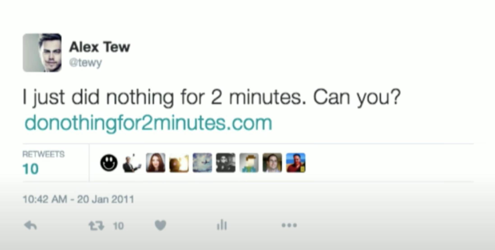
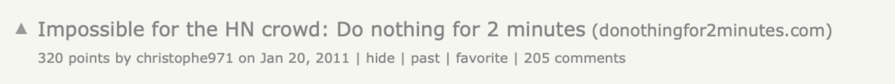

StartUp { stories }
const Startup = {
........name: "Calm",
........year_of_found: 2012,
........founder: [ “Alex Tew”, “Michael Smith”]};
# Введение
Calm - это приложение для медитации и сна, которое наполнено сотнями медитативных практик и историй для более быстрого погружения в сон. Хотя складывается впечатление, что основной фокус платформы направлен на медитацию, Calm сильно выходит за эти рамки, предлагая практики для тренировки внимания, расслабления, фоновые звуки природы и расслабляющую музыку 🧘♀️.
Основная цель сервиса снизить уровень стресса и тревоги у пользователей, повысить качество сна, улучшить показатели внимания и фокусировки, а также общее ментальное самосовершенствование.
На сегодняшний день это единственный сервис, посвященный ментальному здоровью, достигший капитализации в $2 млрд., а количество платных подписчиков на 2022 год насчитывает около 4 млн. В 2017 году Calm получила знаковую награду от Apple и попала в список “Приложений года”.

Calm может показаться тем приложением, идея которого кажется очевидной задним числом. Когда компания стартовала на американском рынке в 2016 году, уже более 20 млн. американцев активно практиковали медитацию. Более того, было доступно большое количество аудио записей для практики, которые можно было загрузить в свой mp3-плеер или iPod.
Не трудно представить, что большая часть этих людей предпочтет доступ к постоянно обновляемой онлайн-библиотеке, чем уже приевшейся базе файлов.
💡 Но процесс проверки гипотезы в случае с Calm был крайне нетипичным и противоречащим базовому принципу старта любого сервиса - начинать с людей, у которых уже сформирована потребность в твоем продукте.
Алекс Тью начал проверять гипотезу с людей, которые не имели никакого отношения к тем 20 млн. медитирующих. Причем делал он это сайтом, созданным изначально для себя.
История запуска Calm начинается с историй двух отдельных личностей, которые до момента встречи уже успели выделиться на предпринимательском интернет поле. С рассказов об Алексе Тью и Майкле Смите мы и начнем сегодняшний кейс.
# Алекс Тью - король вирусных идей
Со-основателя Calm Алекса Тью (twitter) можно назвать гением вирусных идей. Вот несколько историй, предшествовавших запуску Calm, которые говорят сами за себя.
## Million Dollar Homepage
В 2005 году в университете Алекс создал этот сайт с целью собрать деньги на закрытие студенческой ссуды, которая его сильно обременяла. Он потратил несколько дней на генерацию большого количества идей, как заработать денег 😬. Большая часть из них ни на что не годилась, но одна концепция казалась интересной 🤔.
Она была чрезвычайно проста. Минимум за 100 долларов рекламодатель мог купить 100-пиксельный блок (сетка 10 x 10) на борде (площадь которой составляла 1 млн пикселей) сайта и поместить на нее изображение или логотип по своему выбору с гиперссылкой на сторонний ресурс. Единственным правилом было то, что это не могло быть порно. То есть каждый пиксель продавался по цене $1 и задача была продать их все, чтобы заработать $1 млн.
На старте о проекте Тью, очевидно, никто не знал, но ему удалось убедить своих знакомых и родственников купить первые 4,7 тыс. пикселей, а на вырученные деньги он нанял PR-агентство для подготовки пресс-релиза, так как другого пути придания известности сайту он на тот момент не видел. Релиз оказался крайне удачным и его подхватили такие издания как BBC и The Guardian, благодаря чему рекламодатели начали скупать пиксели на его сайте.
За месяц Тью заработал $250 000 и получал 65 тысяч посещений в день. К концу октября он заработал уже суммарно $500 000 от более чем 1,4 тысячи рекламодателей. В канун Нового года было распродано уже 999 тысяч пикселей. Последнюю тысячу пикселей Тью продал на аукционе eBay за 38 тысяч долларов , в результате чего его общий доход составил $1 037 000.

Он быстро бросил колледж и переехал в Лондон. В течение следующих четырех лет Тью пытался повторить свой первоначальный успех, запуская различные идеи. Но все было напрасно 😫.
Сегодня эта идея была бы смехотворной. Но помните, это был 2005 год, и Интернет, каким мы его знаем сегодня, все еще находился в зачаточном состоянии. Так что подобная рекламная идея выстрелила.
### Sock and Awe
Sock and Awe - это игра, которую Алекс и его команда создали в 2008 году за три часа после инцидента с броском обуви в Джорджа Буша-младшего во время выступления в Ираке.

В ней нужно попасть ботинком в уклоняющегося Джорджа Буша 🥾. Она собрала 9 миллионов уникальных посетителей за 7 дней после чего, о ней написали такие международные СМИ как The Telegraph и The Guardian.
## И финально Do Nothing For 2 Minutes
Четыре года, которые он провел в безрезультатных поисках своей следующей большой идеи после запуска **Million Dollar Homepage** (2006-2010), отразились на Тью. Он плохо ел и спал, его психическое здоровье сказалось на его внешнем виде и продуктивности 😵💫. До этого всю жизнь занимавшийся медитацией, Тью обнаружил, что постепенно отходит от своей повседневной практики.
Тью понял, что ему нужно придумать что-то, чтобы заставить себя вернуться к медитации, поэтому он создал сайт 🧑💻 - donothingfor2minute.com - с двухминутным таймером, который перезапускался при перемещении курсора или нажатия на любую клавишу ⏱️. Это был способ Тью заставить себя снова медитировать: притормозить, отвлечься от шума мыслей и поразмыслить.

💡 Время для подобного проекта было идеальным. Рост интернета и распространение смартфонов принесли с собой массу «умственного беспорядка», проблем с концентрацией и повышенную тревожность из-за постоянного доступа к информации и бесконечным нотификациям 🤯.
Люди начали говорить о цифровой детоксикации и задавать вопросы о долгосрочном влиянии социальных сетей на психическое здоровье, и практика осознанности набирала обороты.
Алекс решил попробовать сделать его публичным. Идея заключалась в том, чтобы заставить людей сделать паузу, послушать шум волн и расслабиться на две минуты ⏸️. По истечении двух минут пользователям предлагалось поставить лайк странице проекта в Facebook и оставить свой email для информирования о запуске новых продуктов для решения этой проблемы. Количество емейлов показывало бы реальный интерес к данной проблеме.

Когда Алекс создавал **Do Nothing For 2 Minutes** у него не было того огромного количества подписчиков в Twitter, которое есть сейчас. Но для распространения своей идеи, он использовал несколько хаков:
1) в Twitter он представил твит как расшаренный прямо из сервиса, а не написанный человеком от первого лица, чтобы сервис казался более распространенным, чем он был на самом деле. Кроме того, посыл твита был в духе челленджа - “Я только что выполнил это задание? А вы сможете?” 🤘. Подобная модель “социального хвастовства” повышала шансы, что человек, прошедший челлендж, нажмет кнопку поделиться. И это сработало.
2) на Hackernews он назвал это вызовом для целого сообщества. Вызовы более интригующие, чем обычные повествовательные посты.
Его пост на Hackernews поднялся на второе место в рейтинге дня и привлек внимание репортера Алексии Цоцис, которая на следующий день написала об этом [статью в Techcrunch .](https://techcrunch.com/2011/01/21/creator-of-million-dollar-homepage-makes-do-nothing-for-2-minutes/) Это стало началом интенсивного освещения в СМИ 🗣️, в котором участвовали такие авторитетные издания, как Huffington Post, zdnet и CNN.
💡 Целью запуска сайта в паблик было проверить гипотезу о том, что люди стали отвлекаться сильнее, чем когда-либо, и что эта проблема найдет отклик у аудитории.
Всего за 10 дней сайт посетило больше 2 млн. человек. За две недели страница Facebook набрала более 300 000 лайков, а на сайте было 100 000 регистраций, которые в последствии будут использоваться для запуска Calm.
# Майкл Смит - От игр к медитации
Перед тем как стать со-основателем Calm Майкл Актон Смит основал компанию по запуску онлайн-игр для детей Mind Candy, которая, в последствии, создала игру Moshi Monsters, взорвавшую Великобританию.
В 2003 году он привлек для компании $10 млн. венчурных инвестиций и запустил «Perplex City», игру в альтернативной реальности — коммерческая неудача которой в конечном итоге привела к появлению Moshi Monsters, игре, которая позволяла детям создавать и воспитывать домашних монстров 👹. Игра в итоге взорвала рынок Великобритании. К 2012 году в игру играли почти половина всех британских детей в возрасте от 6 до 12 лет.

❤️🔥 Время шло и моментом разворота для Mind Candy стал конец 2012 года, когда родители стали все чаще покупать своим детям смартфоны и планшеты. Бренд пошатнулся, так как произошел переход от настольных компьютеров к мобильным платформам. Необходимо было превращаться в приложение и начинать конкурировать с огромным количеством молодых игроков на новом рынке, чего компания сделать не успела. Ситуация ухудшалась и за последующие три года Майклу пришлось уволить около 200 сотрудников.
На фоне рушащегося бизнеса Майкл решил сделать шаг назад, побыть наедине со своими мыслями. Он решился на одиночную поездку в Австрийские Альпы и взял с собой книги по медитации 🏔️. Что-то щелкнуло в его голове, когда он обнаружил, что медитация связана не столько с благовониями или религией, сколько с нейробиологией 🧠. «Я понял, что это древний, но ценный навык, который может быть полезен каждому», — сказал он.
# Calm разгон
Вернувшись из Альп в 2012 году, Майкл встретился с Алексом, с которым был знаком с 2006 года, чтобы присоединиться к проекту. Алекс давно склонял Майкла к практике, но тот относился к ней скептически до данного момента.
Окончательно решив сделать медитацию и *ее* преимущества мейнстримом, дуэт купил домен сalm.com за $140 000 (договорившись о снижении с $1 млн.) и запустился с туманной идеей создавать продукты, помогающие людям расслабиться 🧘♂️. Хотя у них и были такие идеи, как успокаивающие видео и расслабляющие звуковые эффекты, они не были уверены в конкретном направлении 🤷♂️. Их основная концепция заключалась в контролируемой голосом медитации и различных программах как для начинающих, так и продвинутых.
В следующем году Тью переехал в Сан-Франциско на другую работу, Майкл жил в Великобритании. Все управление проектом первое время было в удаленном формате в режиме part-time. В первый год (2013) приложение заработало около 100 тысяч долларов. К 2015 году выручка выросла до 2 миллионов долларов, во многом благодаря найму Тамары Левитт, опытного учителя медитации, которая продюсировала и озвучивала контент. За первый период своего существования компания продемонстрировала около 7 млн. загрузок абсолютно не вкладываясь в маркетинг.
# Первые вызовы Calm
Несмотря на, достаточно, успешные первые несколько лет, к середине 2016 года команда начала проявлять беспокойство - выживет ли их компания 🏴☠️, на счетах оставалось всего несколько тысяч долларов. Они ходили по венчурным инвесторам, но везде встречали отказ ⛔️.
💡 “Когда вы слышите “Нет” несколько раз, то вы все еще уверены, что справитесь 💪. Но когда это происходит десятки раз, это заставляет вас задумать, а на верном ли вы пути 🤨? Может инвесторы, действительно, знают больше чем вы?”.
Многие венчурные инвесторы аргументировали свою позицию тем, что у компании нет уникального рыночного предложения и пользователи могут легко получить похожий контент бесплатно.
В итоге они решили, что у них нет другого выбора, кроме как сделать бизнес прибыльным… любыми способами! Они содержали команду около 10 человек, работали долгие часы в квартире с одной спальней в Сан-Франциско и остро сомневались в каждом потраченном долларе. Майкл оплачивал многие расходы компании с помощью своей личной **кредитной карты** .
💡 Компания решила рискнуть и пойти на крайне не популярный шаг повышения стоимости подписки.
Они увеличили годовую цену в четыре раза с $10 до $40, вполне логично, ожидая сильного оттока пользователей. Как ни поразительно, но почти никто не ушел, а количество новых регистраций сохранилось на прежнем уровне.
«Поднимайте цены , — советует Майкл, — если вы строите что-то классное, не бойтесь брать за это плату 💵». В первые дни даже незначительное повышение цены может иметь огромное значение для выживания проекта.
Хотя повышение цены может оказаться очень выгодным в первые дни, само по себе оно мало что дает в долгосрочной перспективе 🛣️, если продукт не стимулирует постоянное потребление.
💡 Помочь людям выработать привычку к вашему продукту - одна из основных движущих сил удержания клиентов.
Один из самых популярных продуктов сервиса — Daily Calm — 10-минутная медитация с гидом, которая обновляется каждый день 🌅. «Новый урок, новая цитата, новая мотивация, — рассказывал Майкл, — которая помогает людям выработать привычку и возвращаться к ней каждый день».
# Генерация идей из данных
Занимаясь систематическим анализом поведения пользователей в приложении Майкл и Алекс заметили странную тенденцию: около 23:00 на всей территории США наблюдались большие всплески активности 🌊. Как выяснилось, значительное количество пользователей использовало медитационные успокаивающие программы не по прямому назначению, а для того чтобы лучше засыпать 😴.
Команда быстро расширила позиционирование сервиса в приложение для “Медитации и Сна”. На сегодняшний день Sleep Stories являются, возможно, самым популярным продуктом сервиса. Они начинаются интересно, постепенно становясь все более монотонными и пресными, пока, наконец, слушатель не засыпает 🛌.

*«Старайтесь искать большие рынки, —* говорит Майкл, *— медитация — это здорово и очень важная часть Calm, но каждый человек на земле ложится спать каждую ночь».* Это около 8 млрд. человек. *«Это огромный рынок, на котором можно строить большие продукты».*
Это не единственное из решений, принятое исходя из анализа поведения пользователей. Вот другой интересный пример анализа данных: команда обнаружила, что пользователи, сами включившие функцию ежедневного уведомления, заходили в приложение в 3 раза чаще, чем остальные.
Речь идёт о функции «Ежедневное напоминание», которая позволяла пользователям устанавливать напоминание для ежедневного сеанса медитации. Но она была скрыта глубоко в настройках приложения. Очень немногие пользователи, менее 1%, находили и включали эти напоминания.
При таком небольшом размере выборки пользовательской базы команда не могла быть уверена, была ли тут причинно-следственная связь. Возможно, опытные пользователи, которые в любом случае заходили бы в сервис чаще всех остальных, были теми, кто копался на странице настроек и находил функцию напоминаний.
Команда провела эксперимент на части своих новых пользователей, сделав ежедневные напоминания более заметными. В тесте после того, как пользователь завершал свой первый сеанс медитации, ему показывался экран, предлагающий установить ежедневное напоминание.
Выяснилось, что новые пользователи, согласившиеся на напоминание, демонстрировали аналогично высокие показатели активности, как и те, кто включал его самостоятельно. То есть присутствовала причинно-следственная связь. И функционал выкатили на всю оставшуюся базу пользователей.
# Философия команды
## Фундаментальные потребности
Основное отличие Calm от многих других успешных продуктов заключается в том, что это бизнес, построенный на вечных человеческих потребностях , а не на хайповых тенденциях текущего момента времени.
💡 Это означает, что необходимость в продукте не возникает неожиданно из ниоткуда, и не исчезнет случайно завтра. Компания обращается к фундаментальным человеческим потребностям, и считает, что это будет ценным через год, через десять лет и через сто лет.
Это те виды бизнеса, в которые вы можете углубиться и сделать ставку на оставшуюся часть своей карьеры, а не думать, что через год или два волна спроса схлынет.
Всякий раз, когда у команды был тяжелый день или что-то шло не так, они просто читают отзывы на Calm в App Store. Существует более двухсот тысяч 5-звездочных отзывов ⭐️. Calm - это тот продукт, который содержит огромное количество историй в отзывах для команды для поднятия духа: от маленьких детей, использующих Calm, чтобы заснуть ночью или справиться со стрессом на экзаменах в школе 👦👧, до людей, которые включали успокоительные аудио для своих умирающих родителей в домах престарелых 🪦, чтобы немного утешить в их последние минуты. Есть отзыв-история о паре, находившейся на грани развода, которая начала каждое утро вместе проходить программу по успокоению и внезапно они смогли увидеть и понять точки зрения друг друга, стали более понимающими и возродили свои отношения 🫂. Есть люди, которые были в депрессии или склонны к суициду, которым контент сервиса очень помог. Истории затрагивают практически весь диапазон человеческого состояний.
## Маркетинг
Как уже говорилось ранее, компания добралась до 7 млн. первых загрузок не потратив и цента на маркетинг. Очевидно, что с тех пор было потрачено много денег на продвижение продукта. Но некоторые форматы этого продвижения заслуживают отдельного внимания. К примеру, компания активно ставила свою телевизионную рекламу во время президентских выборов рядом с политическими контентом и дебатами, который, как правило, выводил людей из равновесия и заставлял искать нечто противоположное.
💡 Алекс и Майкл искренне придерживаются взглядов, что многие компании начинают тратиться на рекламу слишком рано. Маркетинг подобен бензину ⛽️, который вы заливаете в огонь, когда он уже горит 🕯️. Как только вы понимаете, что у вас есть органический или вирусный траффик, то есть продукт, который люди любят и которым делятся, — тогда вы можете добавить маркетинг для ускорения 🔥.
# Что дальше
В начале 2022 года сервис впервые добавил физические активности “Daily Move” в виде серий коротких видео по 3 - 5 минут. Они представляют из себя микс из йоги, пилатеса, растяжек и танцев. Компания хочет привить пользователям привычки к ежедневным физическим активностям, расширяя тем самым возможности своего сервиса.
В феврале 2022 года Calm объявила о своем первом приобретении - Ripple Health Group, быстрорастущем стартапе в области доровья. На основе этого приобретения команда планирует запустить Calm Health, который будет охватывать контент, сообщество и коучинг для достижения результатов по всему спектру психиатрической помощи.